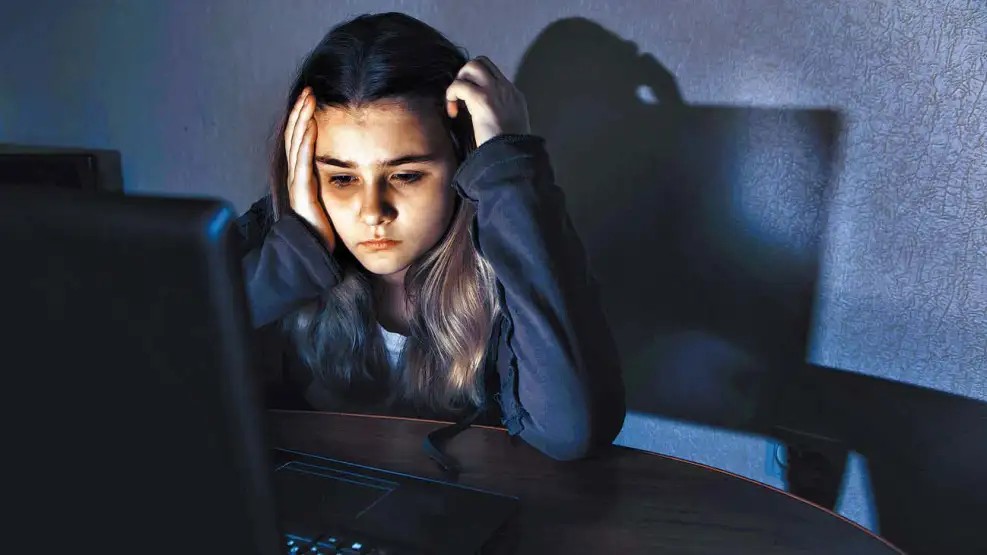

¿Qué es el Ciberacoso?
Es el uso de tecnologías digitales (redes sociales, mensajería, juegos online) para acosar, intimidar, o humillar a otra persona. Puede ser un comportamiento continuo y repetitivo que genera estrés, ansiedad y un sentimiento de miedo en la víctima.
Tipos de Ciberacoso
Difusión de información privada:
Publicar fotos, videos o mentiras embarazosas sin el consentimiento de la otra persona afectada.
Amenazas y mensajes hirientes:
Enviar mensajes de texto, imagenes o audios abusivos , amenazantes o humillantes.
Suplantación de identidad:
Crear perfiles falsos para hacerse pasar por otra persona y enviar mensajes agresivos.
Ciberflashing:
El envio de imágenes explicitas (como las de los genitales) sin el consentimiento de la victima.
¿Qué es el Consentimiento Digital?
Es la autorización que una persona da para usar su información digital, compartir su imagen, o acceder a su contenido de manera libre y explícita. La falta de consentimiento digital es un elemento central en muchas formas de ciberacoso, especialmente en el ciberflashing o en la difusión de material íntimo.
Consecuencias y Acción
Impacto en las víctimas:
El ciberacoso puede causar problemas de ansiedad, depresión, dificultades de concentración y bajo rendimiento escolar, además de afectar la autoestima y el bienestar emocional.
Problemas legales:
El ciberacoso puede tener serias consecuencias legales para el agresor, incluyendo sanciones educativas o incluso penas de prisión, dependiendo de la gravedad de la situación y las leyes específicas.
Cómo actuar:
Guarda la evidencia: Captura de pantalla de mensajes, imágenes o perfiles para usarlos en una denuncia.
Denuncia: Acude a la policía o a la fiscalía especializada, como la Unidad Fiscal Especializada en Ciberdelincuencia (+54 11) 5071-0044.
Habla con adultos de confianza: Si eres niño o adolescente, informa a tus padres o a un adulto de confianza sobre la situación.
Educa y protege: Enseña a los niños sobre el uso responsable de la tecnología y los riesgos del ciberacoso para prevenirlo.

ARGENTINA.GOB.AR
video de como evitar el ciberacoso
Si sufris ciberacoso llama al 137 que funciona en todo el pais
Volver a la pagina prncipal